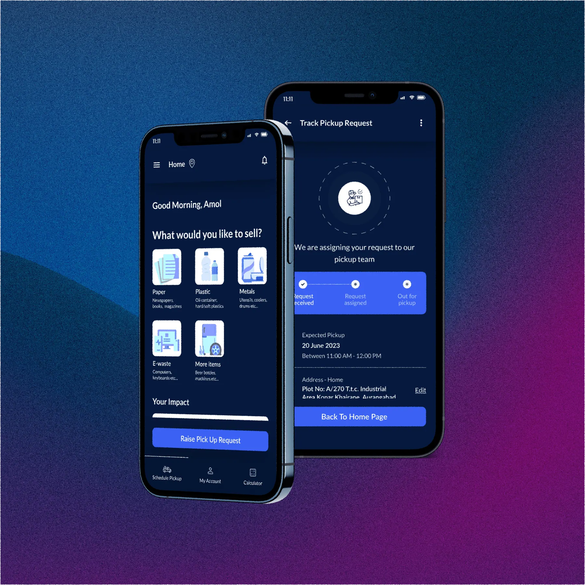

01
Online Bhangarwala
Taking a highly fragmented, completely paper-based manual scrap collection industry and establishing a standardized, digital workflow built from scratch.
- Designing for agents with limited digital literacy.
- Creating the earnings calculator to solve both user and business problems.